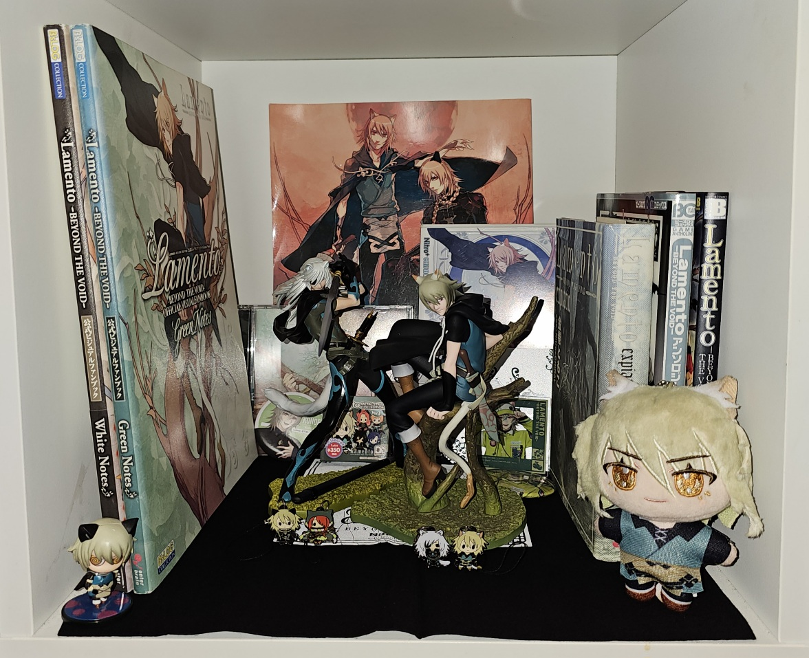

.... you are a curious critter.
idling the days away / the rush begins 1009
now that the summer season has come to an end my life takes a more leisurely turn... i've just been sitting around the house drawing, brainstorming, watching streams and enjoying the comforts of home life. the days seem to blur together into one unintelligible mass, except for one outstanding morning where i (irrationally scared of driving) drove for the first time in 8 years 0_0in a week i'll be turning 26, but my birthday is right in the middle of my firefighting courses, meaning that i'll be kind of just be by myself in the next city over when the day rolls around. before coming home for the weekend, i met up with some coworkers also involved in the watchkeeping program and we all did a first aid course (that reaffirmed my choices to never be a first aid attendant) together. this next time we meet up to take firefighting will be the last time i see some of them, so its a little bittersweet, but at the same time i guess i feel a bit of relief because i don't really have anything non-academic in common with any of them and always feel out of place, even if they're kind to me and we always go out for beers during the IRL portions of our courses. i'm really trying my best to not sweat social situations but it's hard to figure out some dynamics and avoid faux pas, and whenever i hang out with people i'm unfamiliar with, it's all my attention can focus onto. looking back on it, i guess all of my relationships with my coworkers feel strained because i don't spend that much time around people who arent friends or complete strangers, and that ambiguous territory makes it hard to judge how to act or present myself. anyways, i'll be busy and away from home a bit while longer and that makes me feel a little sad, because i've been enjoying my time at home doing nothing of value.

my birthday presents came in a little bit early... i found a listing for the entire metal charm collection + lamento expiatio + the konoe plush charm and the rest is history. goodbye $200... helloooooo piece of plastic!!!!
hard times create strong men 0918
i didn't expect to get so much done over the shift- but here i am, enjoying my new house and my new furniture (my new layouts and fresh stylesheets). it was actually a lot of fun to have a project to focus my attention onto while at work, even if it took up a LOT of my time. every day after my 12-hour shift, i would clock in and work for about 2 hours with just my laptop, cellphone, and the ship's 20kbps wifi, in addition to chipping away for a few hours during the day wherever i could spare the time- but for all the effort, the work just felt effortless and rewarding. the shift was pretty uneventful (aside from the start, when our plane was delayed for a day by weather and we all got to get paid and be home an extra night) and after this, it's back to school in october for a bit of firefighting and first aid certification. thinking about my arrangements for my last major courses in the new year was really stressing me out, so it was great to have other stuff that i could divert my attention towards. i also kept having nightmares onboard and certain people reaching out to me made me feel like i was being emotionally manipulated- so i think a desire to escape from these problems also drove me to work extra hard LOL. and what a reward it is to have taken care of something that has been bugging me for a while!! i'm not totally finished either, but all my majors are complete and, all things considered, the last bit of renovations i need to do are pretty quick fixes that i need to be on my desktop to take care of. i can't wait to finally be home and back in my own bed, even if i know that i'll miss the boat for all the months i'll be away. some things in my RL life are bugging me- but right now i'm just excited to have time to hang out with my friends again.feelings about the site and new plans 0903
i am a person who is never satisfied for long and must continually create tasks and enrichment for myself, lest my life become too peaceful or my stress too managable. the current state of my website has bothered me for a really long time, but for many reasons (most of all my fickle tastes) i've been unable to put my finger on exactly what needs to change and how to accomplish that. after settling my move i finally felt like i had time for my personal projects again; and breaking into a fresh notebook i started to take notes on my vision for 'sanji 2.0'.what has bothered and sometimes upset me the most about my site is my transparency and the idea of 'myself' that is portrayed here, and how that differs from how i would like to present that idea of the 'self' here in the space i created specifically for that goal. is it wrong to overshare, knowing what sharing information actually means? no.. but at the same time, what does it mean for something to be 'right' or 'wrong'? i think it is more that there is a convergence between my 'real self' and my 'identity' and there is a lot of discomfort that is caused by the two sides- which have always been kept seperated- fusing together. i am an adult; i can think for myself and form my own opinions; that my mood changes every day is a natural thing; other people's actions and behaviors are independant of my own actions and behaviors and there is no real need to follow or mimic their ways; the exploration and expression of the self is like a river flowing into a lake, evaporating into vapour, and then condensing as raindrops to begin the cycle again.
is a project like this ever really finished? i originally started work on the site because my time on social media left me feeling jealous, paranoid, anxious, envious, judgemental, bitter..... the list goes on. logging into my old neocities to reclaim the 'sanji' username, even if it contrasted the brand i present here (my seaman's pride and identity), was an action which reunited my adult life with my teenage life; i am reminded not of my adult world (work, money, social frustrations, stress, the harsh truth of aging, the passage of time) but of my childhood world (naïveté without risk or pain, fond memories of fictionkin identity and internet friendships, the freedom to create before my ability to imagine atrophied, acts based on feelings before logic). 2022-2023 were painful years where i felt very alone and i just sat around getting high and drinking and escaping into fantasy all the time- but i was never able to tell anyone about these issues because i felt that if i opened up to others in my life i was going to be made fun of, screenshotted, talked over, and made to feel that i was not living an original experience. i was lonely and feeling left behind; i lived through my worst nightmares of being forgotten and irrelevant. even when my friends were there to support me it was terrifying the way everything had changed- and because of my substance use habits i feared that everyone had just about had enough of my antics and at any time i was due to be cast away again. walking on eggshells every day. when left to my own devices i was unable to stop myself from taking the easy path to happiness. my job anchored me because i needed my reality to be my sanctuary when my safe space had become so hostile to me- not to mention that it forced sobriety on me and that saved me from further hardships. in 2023 i decided that i wanted to be a watchkeeping officer, and i started taking my first courses and working on myself so that i could grow into a fine 'officer of the watch'. school is stressful, so the feeling of escaping into a hobby welcomes me with open arms. in 2024 i started to use neocities- and suddenly my eyes were opened to a community of thinking, feeling, worrying, nonjudgemental, unique individuals.
and ultimately i would be lying if i said that posting on neocities alleviates all of the worries that i felt when i was using twitter, tumblr, or even just talking to other people. even now i worry that i'm saying too much, that my humanity is performative, and that it's egotistical to write so much about my personal life. am i a person, or a character? am i playing a role, or living authentically? how do i express what cannot be said, yet remain impersonal? is it cringe to find yourself? am i doing now what others have been doing all their lives? am i crazy for being different, or am i crazy for thinking that i am distinct at all? is the only way to be satisfied with my image to live in shame and secrecy? it is the constant ebb and flow of questions like these which hold me back.
so... what does any of this have to do with the site direction? to come back to the original point- change begets change. it's my website so i can do whatever i want to. what does it matter to be detestable, cringe, indelicate, stubborn, egotistical, sensitive... when i am fufilled by myself? i'm unhappy with my kingdom so i'm rebuilding it from the bottom up with a clearer vision this time. LFG for new projects!!!!
moving... completed!!! 0824
all the moments of calm, the islands of peace whose magic i felt, i leave behind in the enchanted distance. nor do i ask to ever set foot there again.so after that looooong period of anticipation and lead up, which was undoubtably the worst part of the whole experience- i'm moved into my new place! the weight has been lifted off of my shoulders and i am able to look back on the experience as a storm long past. driving down was a 2 day affair, but once we got to vancouver island it was beautiful the whole way; on the north part of the island the trees are trimmed right to the road and dramatically frame the highway, while the southern and more developed parts offer beautiful seaside glimpses. my dad travelled down with me to help me move and because of that we've been able to make a lot of special memories together. i've only lived in the city for brief periods and this will be the first time i've ever fully moved to such an urban area. since i had never seen the rental nor met the owners in person, there was a lot of anxiety on my part to make sure things weren't too good to be true, but luckily everything seems to be really great, and to such a drastic degree that i can now reflect on my previous period of exile.
world of watercolor painting 0817
one of the items i brought to the ship along with my usual things was a cheap watercolor paint set, with lots of colors. recently i had done one small watercolor painting and taped it into my planner, which really brightened up the book and made me enjoy writing in it more often. so... during my breaks onshift, i ended up doing 15 little paintings, more or less daily. it was peaceful for many reasons; i was reclaiming time spent at work for myself; it made me more aware and appreciative of the fjords and the way the scenery changed day by day; and it brightened up my white-walled cabin with soothing green and blue colors.lead up to work and the move 0806
my life has been thrown out of pattern by packing and getting ready to leave. i haven't had internet and i'm just getting by using my phone as a hotspot, which obviously isnt the end of the world, but it's just another thing irritating me on top of everything else irritating me in life. i was feeling so deeply guilty about the number of things i own and don't use, but i donated a ton of food and toys and workwear and that helped to ease the pain a little. i've definately just been suffering under this immense sense of moral guilt for overconsumptiveness even when i understand that i own a normal amount of possessions. other than that, i've really just been feeling at the mercy of life and have given into myself, understanding that this is a temporary time. the many different plans in motion are making me feel anxious but i can manage it.later today, i'll leave for work and i'm honestly super excited to have a break and a change of pace. over the shift there are a couple of general familiarization things i'd like to knock off, and then other than that i'm free to listen to music, draw, and read onboard. i've been staying away from my phone a lot EXCEPT to play umamusume because now is a time when i need a mobile game to obsess over more than anything.
whalewatching 0726
day shift meant being underway all day, and being underway all day meant lots of opportunities to see whales this shift. i saw more than 40 humpback whales this watch, though to be fair most of them are the same few that hang around in specific areas along the route. it's really important to look out for whales at all times, because the narrow channels severely limit maneouvrability and the ship is very large and turns slowly. and also because they're interesting and i want to keep them safe. around the last few days of the watch, we saw this pair of humpback whales breaching and slapping their fins on the surface a ways up the channel; and then when we passed them at a closer distance- it turned out to be an adult and a baby. lots of the crew came up to the bridge to watch them, and i took this (low quality....) video. it makes me so happy to think about whales that play together on a sunny day.in hindsight it wasn't all bad 0716
i'm a week into my shift and it feels like time is going by so slowly... i'm busy enough that i don't have time to play games or draw or read, but not so busy that i'm unable to overthink everything. i wish that i could be more open about what is bothering me, but it crosses the line about what is okay to discuss publically. lately, i've noticed that when i am stressed/upset/angry or otherwise feeling negatively, my thoughts always become focused onto unresolved hurt feelings, and instead of focusing on what had been initially bothering me all of my attention floods into this cycle of feeling hurt, spiteful, regretting everything and then acceptance of it all. i know that this trouble will come to pass, but it takes so much resolve to get through the episodes of doubt, paranoia, and imagined persecution. i understand that even if the worst came to pass i would be able to make it out okay, but it doesn't stop be from being scared about it happening. anyone else in my position would have done the same things, but it doesn't stop me from trying to come up with all these justifications when just saying 'i feel this way' is more than sufficient. these are some of the things that have been bugging me lately.long-term stressors (moving/nerve pain) exterting force on immediate stressors (mopping up garbage juice onboard every day) exterting force on past stressors (social unease), creating a miserable state of mind.